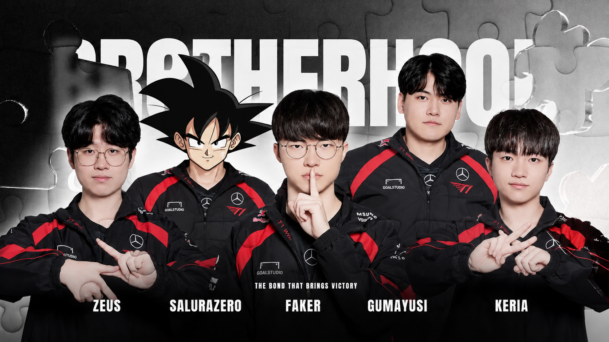

BREAKING: salurazero signs with T1, takes over starting jungle spot from Oner in shock off-season move

In what is already being called the most unexpected signing in League of Legends history, T1 has added European solo queue player salurazero as its starting jungler for the 2027 season, taking over the role held by Oner since 2021.
The move ends weeks of speculation that the organisation was scouting outside Korea. Few expected the search to end on the EUW ladder, and fewer still expected it to end with a player who has never played a professional match.
According to a source with knowledge of the negotiations, T1 scouts first noticed salurazero through his ranked match history, which the source described as “impossible to ignore.” A trial block in Seoul reportedly followed within days.
“We stopped the scrim after the second game. There was nothing left to evaluate. He paths like he has already seen the replay.” A source close to the team, speaking on condition of anonymity
Why T1 believes he is ready
Replacing a multiple-time world champion is not a small ask. People familiar with the trial say the coaching staff came away convinced on three points: early game tempo, objective control, and a calm under pressure that one observer compared to “a man waiting for a bus.”
Chief among the reasons, sources say, was his remarkable 47% win rate. Where other organisations saw a player losing slightly more often than a coin flip, T1’s analysts saw something rarer: consistency.
“Anyone can win more than half their games. Losing 53% of them and still pressing the queue button every single evening takes a mentality you simply cannot coach.” A source close to the team, speaking on condition of anonymity
The same source noted that the 47% was achieved “entirely without help,” citing salurazero’s own long-standing position that his laners have been responsible for every one of his defeats since 2019.
Analysts who have reviewed his recent games point to an unusually wide champion pool and a habit of appearing in the enemy jungle roughly four seconds before anyone thinks to ward it. One LCK caster called his smite timing “frankly rude.”
salurazero at a glance
- Role
- Jungle
- Server
- EUW
- Win rate
- 47% (elite)
- Pro matches
- 0
- Smites lost to lag
- All of them
- Contract
- Through 2028
Full ranked record and champion statistics are available on his OP.GG profile.
The synergy question is the obvious one. T1’s lineup has been built on years of shared stage time, and a newcomer arriving from European solo queue will have to learn a new language, a new meta and a new mid laner’s expectations all at once. Those who watched the trial insist it will not be a problem. He has reportedly already asked whether “/mute all” works on stage, and whether the LCK provides a surrender button at fifteen minutes.
“I was in the middle of a ranked game when my phone rang. I almost didn’t pick up because we had Baron in thirty seconds. I’m ready. I have been ready since Season 9.” salurazero, in a statement shared with Rift Dispatch
Asked in an interview with Sjokz how he plans to handle the scrutiny that comes with the role, salurazero offered what he described as his favourite quote, which he confirmed he wrote himself:
“They don’t hate me because I’m bad. They hate me because I’m the best, and the best always walks alone. A lion does not lose sleep over the opinion of his bot lane. I didn’t choose greatness. Greatness checked my OP.GG and chose me.” salurazero, 47% win rate
He is understood to have the quote set as his phone wallpaper. The interview ended shortly afterwards.
What happens next
T1 has not yet commented publicly on Oner’s plans for 2027, and no further roster changes have been announced. salurazero is expected to relocate to Seoul before the end of the month and begin bootcamp immediately, with his first official appearance pencilled in for the opening week of the LCK season.
The contract is understood to contain several unusual clauses. One guarantees that any stolen Baron will be officially recorded as “jungle diff, but the other way.” Another permits him to type “gg ez” after wins only, a restriction he is said to have negotiated against for several hours. A third confirms that he will not be required to gank a losing lane, in line with his existing policy.
Reaction from fans has ranged from disbelief to open panic. Within an hour of the news breaking, his profile had become one of the most searched on EUW, as thousands of players tried to work out who exactly he is and why they had not heard of him sooner. Several of his former solo queue teammates have since come forward to say that they had, in fact, heard of him, and had reported him.
For more transfer news, read our breakdown of every jungle pathing clip from the Seoul trial and our explainer on how solo queue scouting actually works.